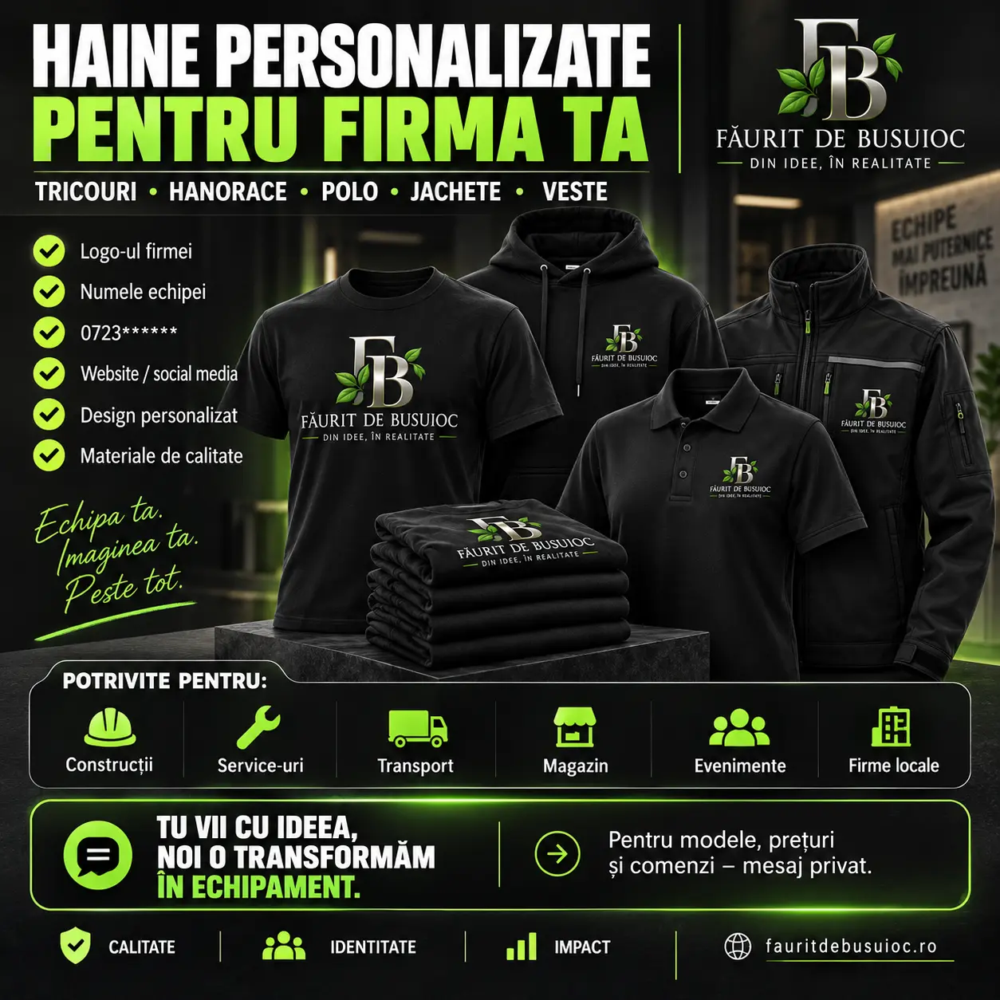
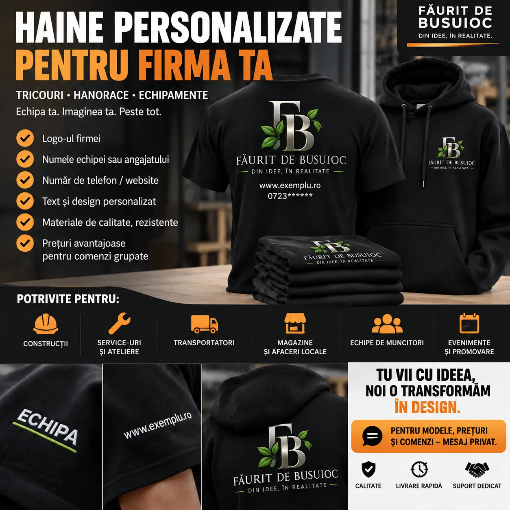
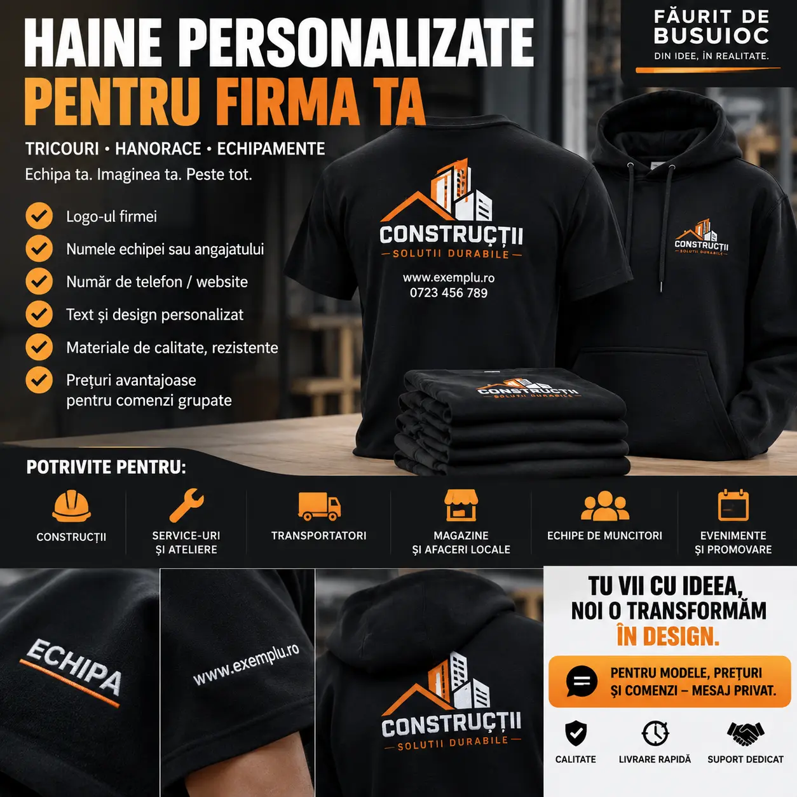

Tricouri
Pentru lucru, promovare și evenimente.
Tricouri, hanorace, polo, veste și echipamente personalizate cu logo-ul firmei, numele echipei, telefonul, website-ul sau designul tău.

Alegem tipul de îmbrăcăminte în funcție de activitate, sezon, buget și aspectul dorit.
Pentru lucru, promovare și evenimente.
Confortabile și vizibile în orice sezon.
Aspect profesional pentru echipe și magazine.
Pentru activitate în exterior și șantier.
Echipamente personalizate pentru lucru.

Personalizarea poate include tot ce trebuie pentru ca echipa să fie ușor de recunoscut și să transmită o imagine unitară.
Ne spui ce articole dorești, cantitatea și mărimile.
Trimiți logo-ul și textele care trebuie personalizate.
Pregătim o simulare vizuală înainte de realizare.
După confirmare stabilim costul și termenul de livrare.
Hainele personalizate sunt potrivite atât pentru echipe mici, cât și pentru comenzi de grup.
Echipamente clare, practice și ușor de identificat pe șantier.
Branding profesionist pentru personal și interacțiunea cu clienții.
Identitate vizibilă pentru șoferi, curieri și echipe logistice.
Ținută coerentă pentru echipă și imaginea afacerii.
Tricouri și hanorace pentru grupuri, campanii și promovare.
Idei individuale, cadouri sau modele create pentru un proiect special.
Poziția logo-ului, culorile și informațiile sunt stabilite înainte de realizare. Astfel știi de la început cum va arăta echipamentul.

Trimite logo-ul, articolele dorite și cantitatea. Discutăm modelul, prețul și toate detaliile direct pe WhatsApp.
Prețul și termenul se stabilesc în funcție de produs, cantitate și tipul personalizării.